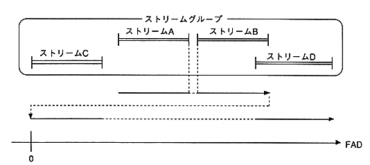

In this case as well, it reads in order from the front stream, but when it finishes reading the last stream, it starts reading the frontmost stream that has not yet been read. In Figure 4.3, B can be read in the order ABCD by opening B during reading A, C during reading B, and D during reading C. Even if the playback range overlaps like B and D, the data of B will not be read.
In the case of Figure 4.3, it takes time for the pickup to move from stream B to stream C In order to prevent such wasted time from occurring as much as possible, it is necessary to arrange the stream playback order from the front of the disk to the back.